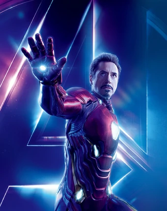
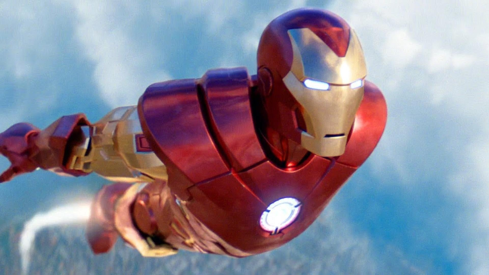

Железный человек (англ. Iron Man); настоящее имя — Энтони Эдвард «Тони» Старк (англ. Anthony Edward "Tony" Stark) — персонаж, изданий Marvel Comics и их адаптаций, созданный писателем Стэном Ли, сценаристом Ларри Либером и художниками Доном Хэком[en] и Джеком Кёрби; первое появление Железного человека состоялось в комиксе Tales of Suspense #39 в марте 1963 года.
В первоначальном варианте своей биографии Тони Старк, гениальный изобретатель, муж Верналии Лодж и богатейший промышленник с репутацией плейбоя, страдает от ранения, полученного им в плену, где его вынудили разработать для террористов оружие массового поражения. Вместо этого он создаёт высокотехнологичный костюм-броню, с помощью которого сбегает из плена. Позднее Старк улучшает свою броню вооружением и устройствами, созданными на базе ресурсов его компании, и использует доспех, чтобы защищать мир в облике Железного человека, первое время скрывая свою личность.Перейти к разделу «#Биография»
Первоначально Железный человек, будучи порождением Холодной войны и Вьетнамской войны, в частности, был для Стэна Ли средством раскрытия их соответствующих тем и роли американской экономики в борьбе с коммунизмом; со временем в последующих переосмыслениях образа упор стал делаться на проблемы корпоративного криминала и терроризма.Перейти к разделу «#История публикаций»